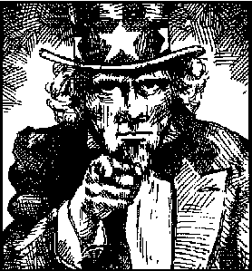
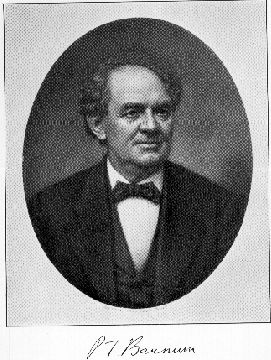

Red and white/blue suede shoes
I'm Uncle Sam /how do you do?
Gimme five/I'm still alive
Ain't no luck/I learned to duck
Check my pulse/it don't change
Stay seventy two/come shine or rain
Wave the flag/pop the bag
Rock the boat/skin the goatWave that flag
Wave it wide and high
Summertime
Done come and gone
My oh myI'm Uncle Sam /that's who I am
Been hidin' out/in a rock and roll band
Shake the hand that shook the hand
Of P.T. Barnum/and Charlie Chan
Shine your shoes/light your fuse
Can you use/them ol' U.S. Blues?
I'll drink your health/share your wealth
Run your life/steal your wife
Wave that flag
Wave it wide and high
Summertime done
Come and gone
My oh my
Back to back/chicken shack
Son of a gun/better change your act
We're all confused/what's to lose?
You can call this song/the United States Blues
Wave that flag
Wave it wide and high
Summertime done come and gone
My oh My
Summertime done come and gone
My oh My
Covered on Deadicated.
First live performance was February 22, 1974 at Winterland. First set opener. The tune has remained in the live repertoire steadily, occupying the encore position almost exclusively.
David --Love your Grateful Dead Annotated site -- love it to death. Thought your readers might be interested in a possible literary allusion in "U.S. Blues." A character named "Skin-the-Goat" figures in James Joyce's Ulysses. He was a member of the Invincibles, a 19th century group of militant Irish radicals intent on assassinating key members of the British government in Ireland. "Skin-the-Goat," a.k.a. James Fitzharris, was involved in the infamous 1882 Pheonix Park murders. According to Don Gifford's "Ulysses Annotated," contrary to what the blowhards sitting around the offices of the Freeman's Journal discussing the incident say, Fitzharris was not the getaway driver, rather he drove a decoy cab. He was caught and later sentenced to life imprisonment, but was paroled in 1902. "He was nicknamed 'Skin-the-Goat'," writes Gifford, "because he was said to have skinned his pet goat and sold its hide to pay his drinking debts."
For what it's worth --
Patrick Klinck
Aurora, NY

See the Uncle Sam image gallery for some great detail.A jocular name for the United States government which arose during the war of 1812. Nowadays, we think of Army recruiting posters of the man with the red white and blue top hat and the wispy goatee. The co-optation of this emblem by the Dead was inspired mockery.
"The statement often made that this expression was inspired by or had reference to one Samuel Wilson of Troy, N.Y., lacks confirmation. ...
1. The United States. A nickname.
1813 Troy Post 7 Sep. 3/3 'Loss upon loss,' and 'no ill luck stirring but what lights upon Uncle Sam's shoulders,' exclaim the Government editors, in every part of the Country... This cant name for our government has got almost as current as 'John Bull.' The letters U.S. on the government waggons, &c are supposed to have given rise to it."
--Dictionary of Americanisms.
And Bob Weir in an interview in Dupree's Diamond News, (18th issue, May 1991) had this to say:
"...And one of our figures is Uncle Sam. And he's up there with Marilyn Monroe and Paul Bunyan and people you may not know, James Dean, Otis Redding, the great ball players. We have our pantheon, and one of the figures in the pantheon is Uncle Sam. He's sort of like the godfather figure of American culture. So we actually have a fair bit of respect for him. And he comes around in different guises, you know--in our little region, he comes around as a skeleton, but he's still wearing the same hat." --p. 30
"Let Me Shake the Hand That Shook the Hand of Sullivan"The Bradys and O'Gradys, ye may talk about them all,
The Laceys and the Caseys from Bombay to Donegal;
I'd like to find another man that's fit to breathe the air
With Sullivan, the gentleman from good old County Clare,
It's him that's easy with the girls and solid with the men,
and when the whiskey jug goes 'round can drink enough for ten;
If anyone does know him here, I don't care who's the man,
Le me shake the hand that shook the hand of Sullivan.[Chorus] He's the pride of the ward, happy as a lord,
He's got the reputation of a man;
Arrah, good luck to yez all, let's have another ball,
Let me shake the hand that shook the hand of Sullivan.

"Barnum, P[hineas] T[aylor] (1810-1891), showman, author. Born in Connecticut, Barnum began his career as showman in 1835 when he bought and exhibited slave who claimed to be 161 years old and the nurse of George Washington. Seven years later he opened his American Museum, in New York City, exhibiting the Fiji Mermaid (half monkey, half fish), General Tom Thumb (a midget less than three feet tall), and the original Siamese Twins, Chang and Eng. He also arranged the American tour of Jenny Lind, known as the Swedish Nightingale. After serving as mayor of Bridgeport and as a member of the Connecticut legislature, he organized "The Greatest Show on Earth," a circus that opened in Brooklyn, New York, in 1871. A merger in 1881 created Barnum and Bailey's." --Benet's Reader's Encyclopedia of American Literature.
"Chan, Charlie. The pudgy, wise, smiling Chinese detective living in Hawaii who appears in a number of stores by Earl Derr Diggers. Chan has a large and constantly growing family--a son in the latter tales begins to learn the sleuthing business from his father--and Charlie is given to philosophical reflections, many of them supposedly culled from Chinese sages. ... Chan first appeared in The House Without a Key (1925), later in other novels, in the movies, and in many radio sketches." --Benet's Reader's Encyclopedia of American Literature.
From: Alex Allan [mailto:alex@whitegum.com]
Sent: Sunday, February 09, 2003 5:29 PM
Subject: Re: One More Saturday Night/U.S.BluesDavid
I just came across the following passage in Dennis McNally's book:
"[Weir and Hunter] clashed again over "One More Saturday Night." Having gotten Hunter's lyrics, Weir rewrote them--badly in Hunter's opinion--and then asked to call the resulting song "U.S.Blues," which Hunter refused to permit. In the end, he declined any association with the song and it was credited to Weir alone." [p393]This throws as interesting light on the line:"You can call **this** song the United States Blues"!
Alex